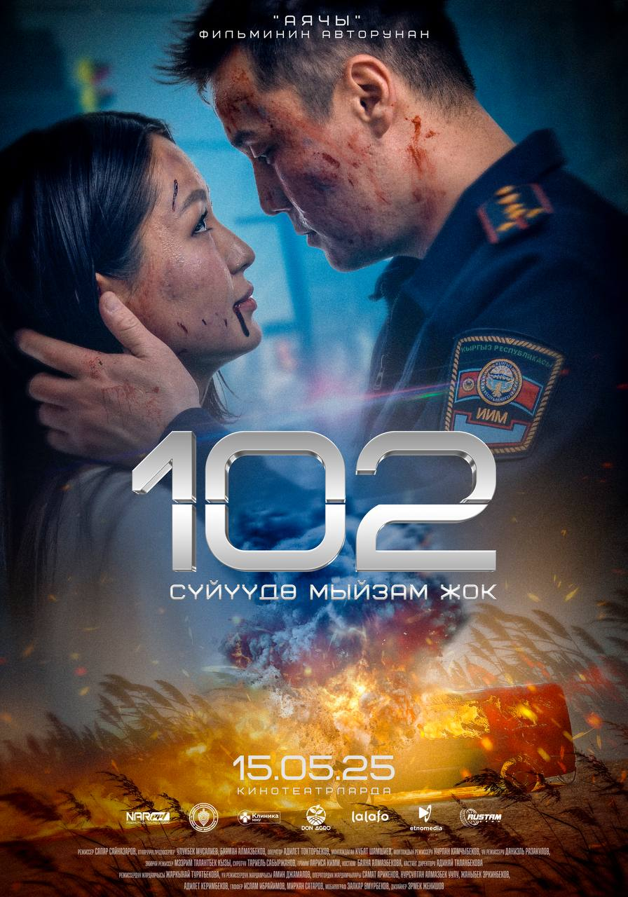

102 (2025)
Жанр:Триллер/p>
Режиссёр: Сапар Сайназаров
В ролях: Бахтияр Шаршенбаев, Мырзайым Касыбаева, Динмухаммед Орозбеков, Абылай Маратов.
Описание:Арман — сотрудник экстренной службы «102», стоящий перед важным жизненным рубежом: скоро с ним должна состояться свадьба с любимой Сезим. Но их планы рушатся, когда незнакомцы похищают невесту. Вынужденный действовать на расстоянии от своей станции, Арман получает лишь обрывочные звонки и тревожные сообщения. Теперь он участвует в отчаянной гонке со временем и угрозой, которую никто не видел — чтобы спасти Сезим и предотвратить катастрофу за стенами своего офиса
Продолжительность: 1ч 15мин
Забронировать билет